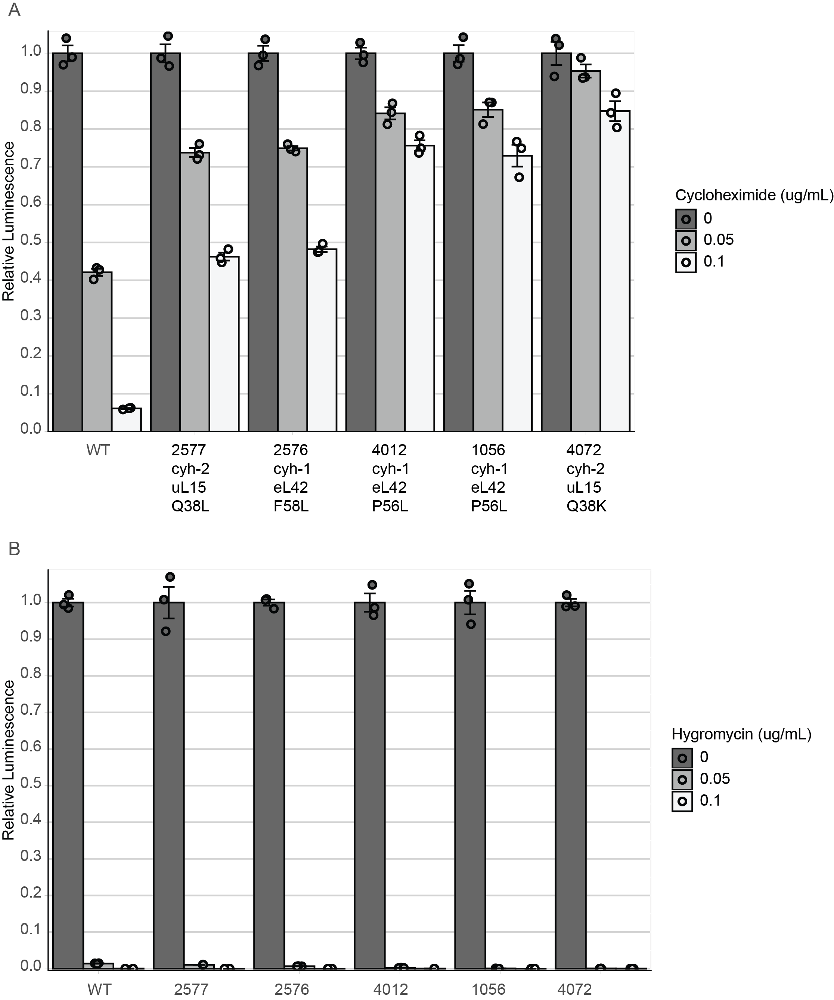
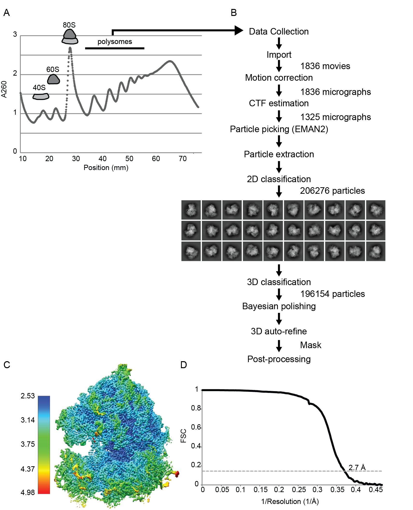

My Skills
• Ability to learn quickly, invent, optimize and develop new approaches
• Ability to multitask and being detail orientated
Bench Skills
• Bacterial, fungal, and mammalian cell culture
• PCR, DNA extraction and transformation, design and generation of bacterial, fungal, and mammalian mutations
• RNA extraction, qRT-PCR, RNA sequencing, in vitro transcription
• Recombinant protein expression and purification, Co-IP, Western blot
• in vitro translation

Microscopy
• Cryo-electron microscopy
• Negative stain TEM
• Light microscopy
• Confocal fluorescence microscopy
Computer Skills
• Python | R | SAS | SQL
• HTML | CSS | Javascript
• Molecular visualization programs (e.g. UCSF ChimeraX)
• Image processing programs (e.g. RELION | cryoSPARC | ImageJ)
• Computational modeling software (e.g. ModeRNA | ROSETTA | COOT)
Research Experience
2014/12-2021/12 | Graduate Research Assistant | Texas A&M University, College Station, Texas
Advisor: Dr. Matthew S. Sachs
In my PhD program, I:
1. Developed a ribosome tagging system in Neurospora crassa, shortened the ribosome purification time from several hours to several minutes, and maintained near-native conditions throughout the purification process.
2. Determined the mechanism of how cycloheximide inhibits translation in Neurospora crassa.
This work was recently published on Proceedings of the National Academy of Sciences of the USA (PNAS).I showed how different N. crassa strains react to drugs in translation.

N. crassa ribosomes arrested by cyclohexmide at 2.7 Å resolution.

the first atomic models for all ribosomal proteins and ribosomal RNAs in N. crassa.

2012/09-2014-7 | Graduate Research Assistant | National Tsing Hua University, Taiwan
Advisor: Dr. Hwan-You Chang
In my MS program, I:
1. Characterize the roles of global regulator FliA in the pathophysiology of Pseudomonas aeruginosa infection.
2. Showed that the regulation of motility and phenazine pigment production by FliA is cyclic-di-GMP dependent.
My work has been published on PLOS One and Research in microbiology
2010/09-2012/07 | Undergraduate Research Assistant | University of Science and Technology of China, Hefei, China
Advisor: Dr. Tao Zhu
For my BS thesis, I:
1. Examined the expression levels of microRNA-30a and microRNA-30a* between normal tissue and cancer tissue.
2. Transfected MDA-MB-231 cells and MCF-7 cells with microRNA mimics, and examined cell proliferation.
3. Established MDA-MB-231 cell with stable expression of pre-miR-30a and pre-miR-30a*, and examined cell proliferation and colony formation.
2011/06-2011/08 | Research Intern | Idaho State University, Pocatello, Idaho
Advisor: Dr. Timothy S. Magnuson
I am really grateful to Dr. Timothy S. Magnuson and Dr. Rhesa Ledbetter for giving me the precious opportunity to do research at Idaho State University. That was my first time travelling out of my mother country. During that summer, I was exploring the American culture as well as doing my project, in which I set up a bioreactor to culture phototrophs growing on dairy manure and investigated the genes that enable bacteria to use xylan as a carbon source.
Honors and Awards
• Biology Travel Award, Biology Department at Texas A&M University, 2019
• Honorary Member of The Phi Tau Phi Scholastic Honor Society of The Republic of China, 2014
• Graduate Research Fellowship, National Tsing Hua University & Hon Hai/Foxconn Technology Group, 2013 & 2014
• Outstanding Graduate Award, University of Science and Technology of China, 2012
• Outstanding Student Leadership Award, University of Science and Technology of China, 2011